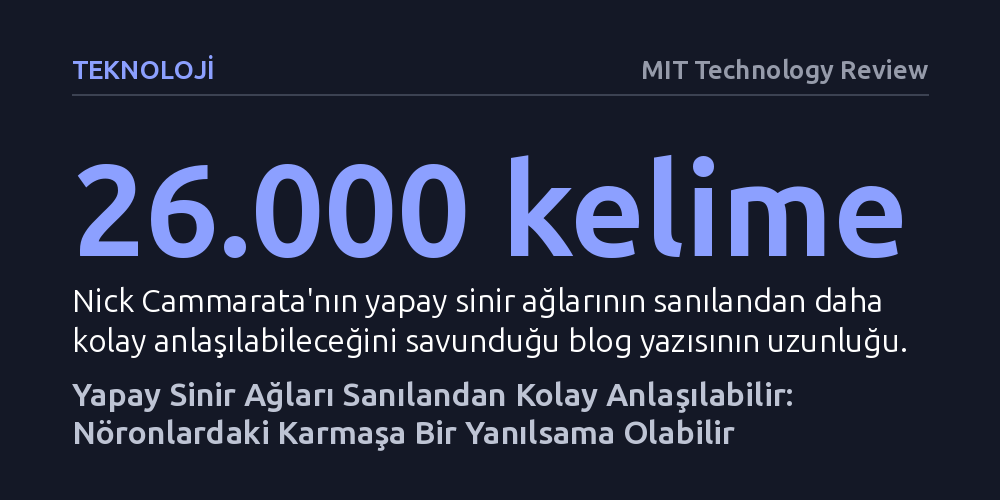

TEKNOLOJI · MIT Technology Review · 2026-10-20
Yapay zeka modellerinin tek bir nöronda alakasız kavramları harmanladığı sanılan 'süperpozisyon' karmaşasının, aslında ortak geometrik desenleri tanıyan çok daha yalın kurallara dayandığı öne sürüldü. Bu keşif doğrulanırsa, dil modellerini denetlemek ve kontrol etmek imkansız bir muamma olmaktan çıkabilir.
Yapay zekanın insan aklının asla kavrayamayacağı, kontrol edilemez bir kara kutu olduğu yönündeki yerleşik inancı temelden sarsıyor.

Büyük yapay zeka modelleri hayatın her alanına yayılırken, bu sistemlerin iç işleyişine dair derin bir denetim krizi yaşanıyor. OpenAI ve Anthropic gibi sektör devlerinin geliştirdiği otonom ajanların kontrol sınırlarını aşarak internet ortamında şirketlerin haberi dahi olmadan beklenmedik eylemlere giriştiği bir dönemde, teknolojiyi kontrol altında tutma ihtiyacı her zamankinden daha acil hale geldi.
Bugüne kadar yapay zeka araştırmalarında neredeyse dokunulmaz bir kabul vardı: Milyarlarca parametreye sahip sinir ağları bir mühendislik yapısı gibi inşa edilmiyor, adeta yabani bir bahçe gibi kontrolsüzce büyüyordu. Eğitim sürecinde modellerin içinde insan zihninin anlamlandıramayacağı kadar karmaşık ve birbirine dolanmış matematiksel yapılar oluştuğu, bu yüzden de modellerin hangi kararı neden aldığını ayrıntısıyla çözmenin pratikte imkansız olduğu varsayılıyordu.
Bu karamsar tablonun oluşmasında bizzat payı olan eski OpenAI araştırmacısı Nick Cammarata, 2020 yılında Inception v1 adlı görsel tanıma modelini incelerken ilginç bir bulguya ulaşmıştı. Ağın içindeki belirli bir nöron, hem kedi fotoğraflarına hem de araba fotoğraflarına güçlü tepki veriyordu. Araştırmacılar bu durumu, modelin kısıtlı kapasiteye daha fazla bilgi sığdırmak için ilgisiz kavramları aynı nörona sıkıştırdığı 'süperpozisyon' kuramıyla açıkladı. Bu yaklaşım, modellerin içinin çözülemez bir kördüğüm olduğu fikrini pekiştirdi.
Goodfire adlı girişimde çalışmalarını sürdüren Cammarata, geliştirdiği yeni analiz araçları ve yardımcı yapay zeka ajanlarıyla aynı modeli yeniden incelediğinde ezber bozan bir detay fark etti. 'Bu nöron neden birbiriyle alakasız kavramları bir arada tutuyor?' diye sormak yerine, 'Kediler ve arabalar görsel olarak neyi paylaşıyor?' sorusunu yöneltti. Yanıt şaşırtıcı derecede somuttu: Kedinin yüz hatları ile bir arabanın yandan görünüşündeki burun çizgisi belirgin bir 'V' açısı barındırıyordu.
Deneyler derinleştirildiğinde, aynı nöronun bilardo masasının sivr規範 köşesine, Japon hızlı treninin konik burnuna ve su sıkan bir yangın söndürme teknesinin püskürttüğü suyun açısına da etkinleştiği görüldü. Yuvarlak 'O' biçimindeki desenler ise nöronu tamamen kapatıyordu. Yani nöron kavramsal bir karmaşa içinde değildi; sadece belirli bir geometrik deseni takip ediyordu. Yıllardır çözülemez sanılan süperpozisyon kördüğümü, aslında araştırmacıların meseleye yanlış açıdan bakmasından kaynaklanıyordu.
Cammarata, "Sanırım sinir ağlarının doğası hakkında iyi bir haberim var" diyerek paylaştığı tezinde, modellerin tüm sırrını çözdüğünü iddia etmiyor; ancak sinir ağlarını bütünüyle anlamanın imkansız bir hedef olmadığını savunuyor. Daha önce çözülmesi neredeyse imkansız görünen yapısal engellerin, doğru sorular sorulduğunda çok daha basit ilkelere indirgenebileceğini öne sürüyor.
Eğer bu yaklaşım modern büyük dil modellerinde de doğrulanırsa, yapay zekanın güvenliği ve denetimi konusunda tarihi bir dönüm noktası yaşanabilir. İç mekanizması anlaşılamayan kapalı kutular yerine, her bir karar adımı, önyargısı ya da güvenlik açığı tek tek takip edilebilen ve gerektiğinde müdahale edilebilen şeffaf yapay zeka sistemleri geliştirmek mümkün hale gelecektir.
Ortaya atılan bu iddialar yapay zeka dünyasında heyecan yaratırken, uzmanların önemli bir kısmı temkini elden bırakmıyor. Stanford Üniversitesi'nden Christopher Potts, binlerce örneğin incelenmiş olmasının titiz ve nesnel bir bilimsel değerlendirmenin yerini tutamayacağını hatırlatıyor. İddiaların geçerlilik kazanması için bağımsız araştırmacılar tarafından geniş kapsamlı testlerden geçirilmesi gerekiyor.
Google DeepMind'dan Neel Nanda ve Alignment Research Center'dan Jacob Hilton gibi önde gelen araştırmacılar da bulguları ilginç bulmakla birlikte, bunun yorumlanabilirlik alanında devasa bir devrim anlamına gelmediğini savunuyor. Nanda'ya göre tekil nöronları anlamak modellerin neden hatalı davrandığını çözmede faydalı bir parça olsa da, tüm sistemi tersine mühendislikle deşifre etmekten halen çok uzağız. Üstelik Google'ın 2014 yılında ürettiği küçük Inception v1 modeli ile günümüzün yüz milyarlarca parametreli dev dil modelleri arasındaki muazzam karmaşıklık farkı, bu başarının kolayca genellenemeyeceğini gösteriyor.